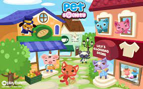

I didn't know what facebook was until I started elementary school. I remember most of my friends bragging about being on it, despite the age requirement being 13
we were 7!
I proceeded to go home and ask my parents for permission
to which they easily agreed to?
to create a facebook account.
Pet Society

is the only game I remember playing on facebook
I probably played more games, I just don't remember the other ones
and I found it pretty fun. I haven't played it since I deleted my facebook account when I was 13
how ironic
side note: here's an interesting article I found about Pet Society, which pretty accurately describes how the game was played. article here!